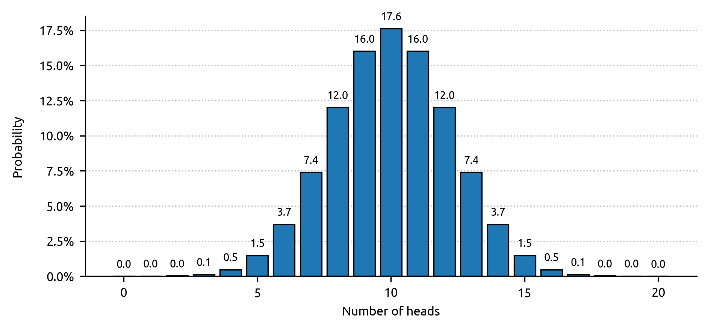
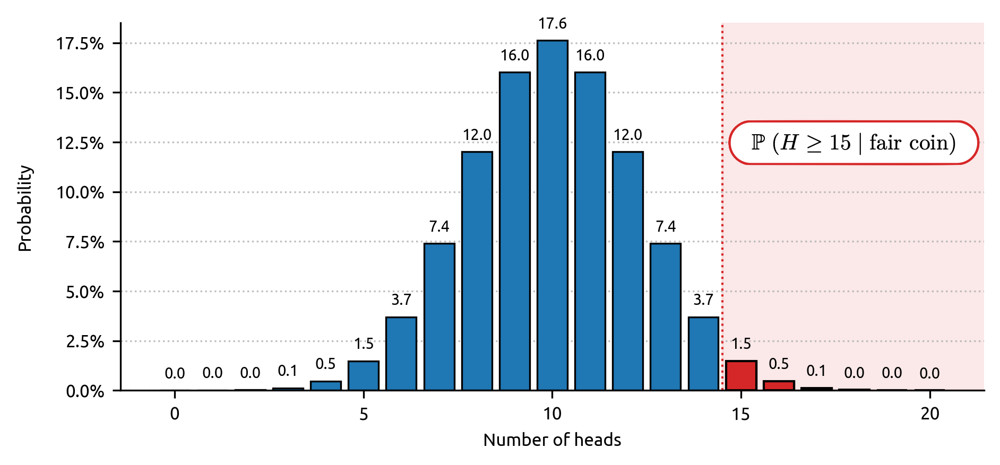

Welcome! If concrete examples speak to you more than grand theories, then you are in the right place. Now that we have seen that the p-value is ultimately nothing more than a probability that depends on a hypothesis, let us look at a concrete example to bring these notions definitively to life. As a reminder, when we observe the result of an experiment ($X_{\text{observed}}$) given our null hypothesis $H_0$, the p-value is the probability of obtaining a result at least as extreme as the one observed, in the world where $H_0$ — our belief — is true. $$\text{p-value}:= \mathbb{P}(X \geq X_{\text{observed}} \mid H_0 \text{ true})$$
The p-value then allows us to decide whether the observed result is ordinary — consistent with our beliefs, with our hypothesis — or whether it should be considered extraordinary. And it is the null hypothesis $H_0$ that defines what ordinary means — it is the “ default ” world. The 0.05 (5%) threshold allows us to decide whether a result is ordinary or extraordinary and, where appropriate, to move from the world of $H_0$ to that of $H_1$.
Classically, a result that had less than a 5% chance of occurring in the world where $H_0$ is true, but which occurred nonetheless, is considered extraordinary (p-value < 0.05), and constitutes sufficient evidence to reject the world in which $H_0$ is true and shift into that of $H_1$. Indeed, if we were truly in the world of $H_0$, this result was too unlikely to be observed, to arise through the mere workings of chance. Conversely, a result that had more than a 5% chance of occurring in the world where $H_0$ is true is ordinary (p-value ≥ 0.05), and does not constitute sufficient evidence to shift towards $H_1$: we cannot reject the world in which $H_0$ is true and shift into $H_1$. Indeed, if we were truly in the world of $H_0$, this result was likely, possible. This does not mean that $H_0$ is true or that $H_1$ is false, but simply that we have not accumulated enough evidence to change worlds.
A tale of a coin
Franck has been given a coin and wishes to find out whether it is fair or not. When tossing a fair coin, there is a 50% chance of it landing on tails and a 50% chance of it landing on heads (ignoring the edge). If the coin is biased — unfair — the probabilities are not 50-50. For instance, a biased coin might have a 70% chance of landing on heads and a 30% chance of landing on tails. In this experiment, Franck wishes to find out whether the coin is biased towards heads, that is, whether it has a greater chance of landing on heads than on tails.
In this example, Franck's world $H_1$ is the one where the coin is biased towards heads. And the default world, $H_0$, is the one where the coin is fair. Actually, since $H_0$ must be the strict opposite of $H_1$, it is the world in which the coin is either fair or biased towards tails. For the sake of simplicity, we assume that $H_0$ is the world in which the coin is fair. Even though Franck is trying to find out whether the world where $H_1$ is true exists (the coin is biased), he must first place himself in the world where $H_0$ is true and act as though his coin were perfectly fair. If, and only if, he accumulates sufficient evidence to call $H_0$ into question (p < 0.05), will he be able to shift towards $H_1$ and believe that his coin is biased towards heads. If he does not accumulate enough evidence (p ≥ 0.05), he will not be able to shift towards $H_1$ and will find himself compelled to remain in the world of $H_0$. This does not mean that his coin is fair (or biased toward tails), but only that he has not accumulated enough evidence to show that it was biased in favour of heads, if it truly was.
To test whether his coin is biased or not, Franck decides to toss it 20 times. Let $H$ be the discrete random variable that counts the number of heads obtained over the 20 tosses. The null hypothesis $H_0$ being “ the coin is fair ” and the alternative hypothesis $H_1$ being “ the coin is biased towards heads ”, we can write
$H_0 : \text{the coin is fair}$
$H_1 : \text{the coin is biased towards heads}$
Franck carries out the experiment and gets 15 heads ($H = 15$). What can he conclude?
First and foremost, a crucial point to bear in mind is that he will never be able to know with certainty whether his coin is biased or not. Perhaps the coin is fair and he simply had bad luck, or perhaps the coin is truly biased and it is therefore perfectly normal to get 15 heads out of 20 tosses. Worse still, this reasoning holds for any value of $H$: if Franck had obtained 20 heads out of 20 tosses, perhaps he was simply extraordinarily unlucky (or lucky, depending on one's point of view), or perhaps the coin is genuinely biased and obtaining this result is therefore perfectly normal. No matter what decision he makes, a doubt will always persist. However, the theory of the p-value will nonetheless allow him to make an informed choice about what he should or should not believe. He will be able to evaluate in which world his result is most likely.
And the p-value allows precisely this kind of 'objective' decision to be made: Franck simply needs to ask himself, in the world where $H_0$ is true (the coin is fair), what is the probability of observing a result at least as extreme as his own? If the coin is fair, what is the probability of obtaining at least 15 heads out of 20 tosses? Mathematically, this amounts to calculating: $$\mathbb{P}(F \geq 15 \mid H_0 \text{ true}) = \mathbb{P}(F \geq 15 \mid \text{the coin is fair})$$
If this probability — which is nothing other than what we call the p-value — is greater than or equal to 5% (p ≥ 0.05), then Franck's result is ordinary, probable enough that he need not call his initial belief $H_0$ into question: either his coin is fair, or it is biased but he does not have enough evidence to demonstrate it and to shift towards $H_1$. However, if this probability is less than 5% (p < 0.05), the result becomes extraordinary in the world of $H_0$, and Franck has accumulated enough evidence to shift towards $H_1$: observing such a result (or one just as extreme) if the coin were truly fair would have been too unlikely — it is therefore more reasonable to think that it is his initial belief that is false: his coin is in all likelihood biased towards heads.
An ordinary result in $H_0$ does not allow us to call the validity of this world into question; an extraordinary result does. The reasoning is as simple as that.
The first thing Franck needs to do is to characterise the ordinary, the world of $H_0$: when tossing a fair coin 20 times, what should one expect? One might think that 10 heads and 10 tails should be obtained. This is indeed the most likely result, but it only occurs in 17.6% of cases. Obtaining 11 heads and 9 tails is slightly less likely and occurs in 16% of cases, as does obtaining 9 heads and 11 tails. Thus, when tossing a fair coin 20 times, we are almost twice as likely to get 11 tails and 9 heads (16%) or 9 tails and 11 heads (16%) than 10 tails and 10 heads (17.6%). 32% versus 17.6%. But then, how does one decide that a result falls outside the norm? The answer is now obvious: by using the p-value.
The probability distribution of the random variable $H$ counting the number of heads one can expect to obtain when tossing a fair coin 20 times is shown in Figure 1.

In Figure 1, we can visualise the probabilities described previously. The results are rounded to one decimal place, such that the probabilities of obtaining 18, 19, or 20 heads out of 20 tosses are 0.018, 0.002, and 0.0001 respectively. If you toss a perfectly fair coin 20 times, there is thus a 1 in 10,000 chance of it landing on heads all 20 times. Were this to occur, it would truly be extraordinary.
To calculate the p-value, one simply needs to calculate the probability of obtaining a result at least as extreme as the one observed given $H_0$ is true, namely: $\mathbb{P}(H \geq 15 \mid \text{fair coin})$. Since the random variable $H$ is discrete, one can simply add up the probabilities such that obtaining at least 15 heads is equivalent to obtaining 15 heads, or 16 heads, or 17 heads, or 18 heads, or 19 heads, or 20 heads: $$ \begin{alignedat}{3} \text{p-value} &\;:&= &\; \mathbb{P}(H=15 \mid \text{fair coin}) \\ & & + &\; \mathbb{P}(H=16 \mid \text{fair coin}) \\ & & + &\; \mathbb{P}(H=17 \mid \text{fair coin}) \\ & & + &\; \mathbb{P}(H=18 \mid \text{fair coin}) \\ & & + &\; \mathbb{P}(H=19 \mid \text{fair coin}) \\ & & + &\; \mathbb{P}(H=20 \mid \text{fair coin}) \end{alignedat} $$
Just for the beauty of maths, this formula can be written as: $$ \text{p-value} \coloneqq \sum_{i=15}^{20} \mathbb{P}(H = i \mid \text{fair coin}) $$
Figure 2 shows this quantity and what the p-value looks like visually. Here, since the random variable $H$ is discrete (one can count the values it can take), the p-value does not correspond to an area between two bounds under a continuous curve — the probability density — but to the sum of the heights of the histogram bars for all values from 15 to 20. The sample space of possible values being {0, 1, …, 20}, the sum of all the bar heights is indeed 100%.

Using Figure 2 and a quick calculation, we can conclude: $$\mathbb{P}(F \geq 15 \mid \text{fair coin}) = 1.5\% + 0.5\% + 0.1\% + 0.018\% + 0.002\% + 0.0001\% = 2.1\%$$
Thus, in the world of $H_0$ where Franck's coin is fair, the probability of obtaining at least 15 heads out of 20 tosses is only 2.1%. The p-value is rarely expressed as a percentage, so one would instead write: p-value = 0.021. In official scientific results, the p-value is often abbreviated to p. One can therefore simply write p = 0.021.
Since 0.021 < 0.05 (2.1% < 5%), Franck has sufficient evidence to shift towards $H_1$. His conclusion is as follows: “ If my coin were truly fair, the probability of obtaining this result or an even more extreme one would have been only 2.1%. Thus, if my coin were truly fair, this result would be truly extraordinary. Since my result is too unlikely in the world where $H_0$ is true, in the world where my coin is fair, it would not be reasonable to attribute it to chance. The world where $H_0$ is true, the one where my coin is fair, simply does not fit with what I observe. I must reject my null hypothesis and shift towards $H_1$: my coin is biased towards heads. ”
If the coin is truly biased, Franck has made the right decision. However, in a world where $H_0$ is truly true (the coin is fair) and where Franck obtains this same result — which occurs in 2.1% of cases — his conclusion will be the same, his reasoning will be sound, but he will be wrong.
Once again, the p-value does not allow Franck to know to what extent he can believe in $H_0$. It does not give the probability that the coin is fair given that he obtained 15 heads out of 20 tosses. It would be wrong to claim that the coin has a 2.1% chance of being fair given the observed result.
Over to you
In this interactive section, I invite you to test for yourself from what point a coin can
be considered biased towards heads. By considering a certain number of tosses as well as
the number of times the coin has landed on heads (denoted $k$), you can calculate the
probabilities that the random variable $H$ is equal to a certain value $k$, or greater
than or equal to this value, always within the world of $H_0$, that is,
by « naively » assuming that the coin is fair.
As a reminder, the p-value is: $\mathbb{P}(H \geq k \mid H_0 \text{ true}) = \mathbb{P}(H
\geq k \mid \text{the coin is fair})$
A word of caution
When the number of heads obtained is very low and tends towards 0, the p-value is large and tends towards 1: the null hypothesis cannot then be rejected (p ≥ 0.05). But bear in mind that this does not mean the coin is necessarily fair. Since $H_0$ and $H_1$ are strictly opposite, the correct conclusion is: the coin is not biased towards heads — it may therefore be either fair or biased towards tails.
For instance, obtaining only 19 heads out of 60 tosses gives $p = 0.999 \gg 0.05$, which confirms that the coin does not lean towards heads and is therefore not biased in their favour. On the contrary, the coin even appears to lean towards tails: 19 heads out of 60 tosses means 41 tails. Now, if one had observed 41 heads out of 60 tosses of a supposedly fair coin, one would have obtained $p = 0.002 < 0.05$ — a result that would have led us to conclude that the coin is biased towards heads. By symmetry, one can therefore conclude here that the coin is in all likelihood biased towards tails.
It is precisely to avoid this type of indirect reasoning that two broad families of tests are distinguished in practice. In a one-tailed test, one looks for an effect in a specific direction: for instance, is the coin biased towards heads? In a two-tailed test, no direction is favoured and one simply seeks to determine whether the coin is biased, in one direction or the other. In our example, we chose a one-tailed test with an alternative hypothesis going in only one direction — asking solely whether the coin was biased towards heads — for the sake of simplicity. Our reasoning is perfectly correct, but simply does not allow us to detect whether a coin is biased towards tails. In fact, a two-tailed test is often more appropriate when one wishes to test whether a coin is fair, as it accounts for both possible types of bias without having to reason by symmetry — but that is a story for another time...